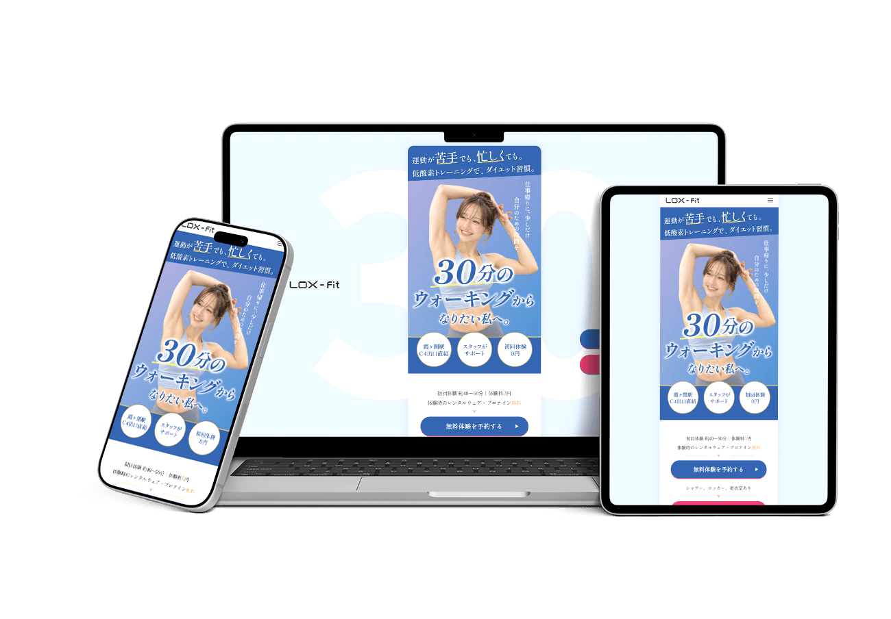
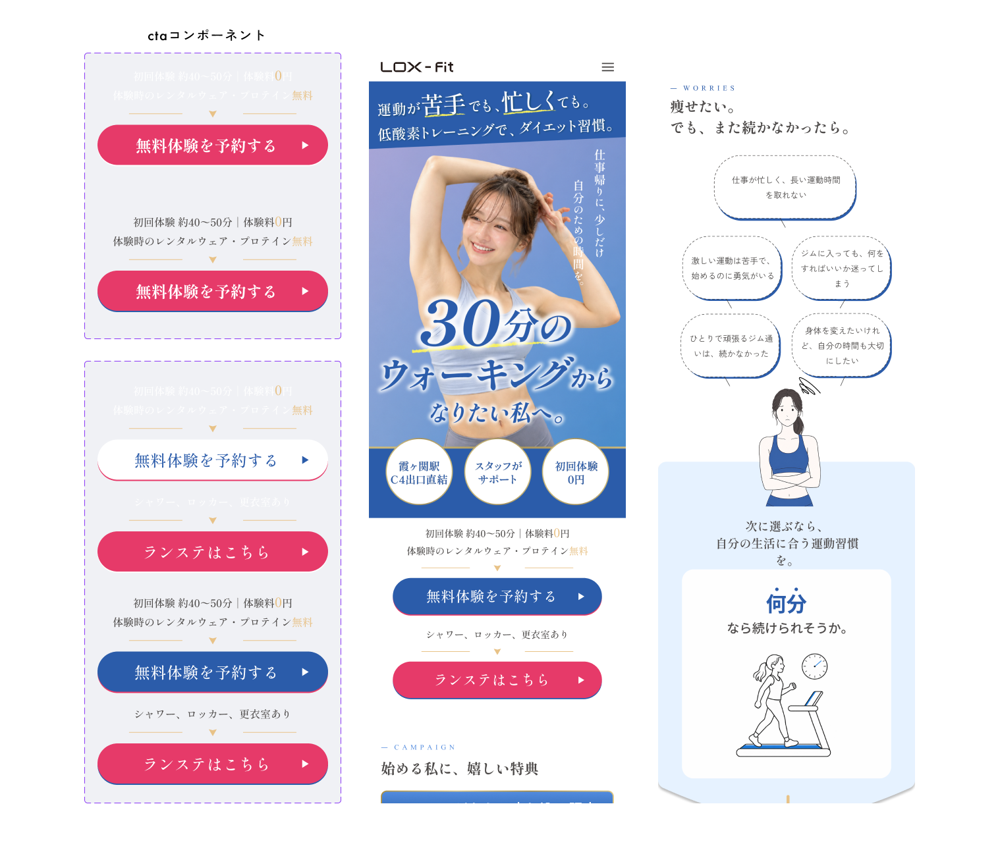

Title
LOX-FIT LP

Target
メイン：運動が苦手、または忙しく、ダイエットや運動習慣がなかなか続かなかった方。
サブ：仕事帰りに通えて、スタッフのサポートがあるジムを探している方。
Purpose
初回体験0円・初期費用0円のキャンペーンを軸に、無料体験予約の促進を目的に制作しました。低酸素トレーニングを知らない方にも、体験のイメージを持ってもらえるよう意識しています。
Details
「痩せたい、でもまた続かなかったら」という悩みへの共感から、低酸素トレーニングの説明、選ばれる理由、体験の流れへと段階的に提示。不安を解消しながら、体験予約へ自然につながる構成にしています。
Design
ご要望のあった動画のFV採用は、訴求が瞬時に伝わりにくくなるため見送り、マーケターと相談のうえ、アニメーションで動きを取り入れる提案をしました。読んでほしい箇所へ自然に視線を誘導し、最後まで飽きずに読み進められるよう、動きの量とタイミングを調整しています。
Concept color
#2b5caa
#e6f2ff
#e63a69
Production Scope
ワイヤフレーム、デザイン、コーディング、サーバーアップ
Tools
- Photoshop
- Illustrator
- Figma
- html
- scss
- JavaScript
- jQuery
Workflow
-
ワイヤーフレーム
7時間
-
デザインカンプ
9.5時間
-
Photoshop
0.5時間
-
Illustrator
5時間
-
html
4時間
-
scss
7時間
